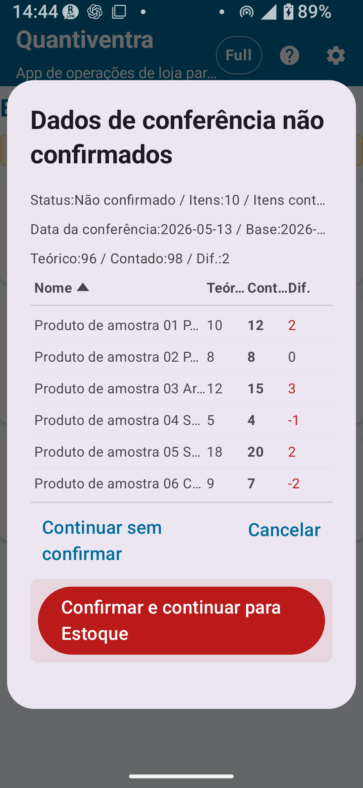

Visão geral da versão Completa
O Versão Completa de Inventário físico remove todos os limites de registros e ativa as configurações completas compartilhadas — regras de código, regras de localização, configurações de câmera, CSV expandido e mais. Suporta gerenciamento de grande volume de produtos e fluxos de inventário físico por localização detalhada.
- Remoção dos limites de registros de cadastro, histórico e exportação
- Configurações detalhadas de regras de código
- Configurações detalhadas de regras de localização
- Configurações detalhadas de câmera
- Exportação CSV expandida
- Edição detalhada
- Bloqueio de rotação de tela (herdado do Versão Padrão)

Diferenças em relação à versão Padrão
| Funcionalidade / Configuração | Versão Padrão | Versão Completa |
|---|---|---|
| Registros de cadastro | Máx. 300 | Ilimitado |
| Registros de histórico de inventário físico | Máx. 1.000 | Ilimitado |
| Registros de exportação | Máx. 300 | Ilimitado |
| Configurações detalhadas de regras de código | ✗ | ○ |
| Configurações detalhadas de regras de localização | ✗ | ○ |
| Configurações detalhadas de câmera | ✗ | ○ |
| Exportação CSV expandida | ✗ | ○ |
| Uso de localizações detalhadas | ✗ (modo Detalhado pode ser configurado, mas com funcionalidade limitada) | ○ |
Localizações detalhadas
Com o Versão Completa, todas as localizações cadastradas no Cadastro de localizações ficam disponíveis para o inventário. Você pode configurar números de prateleira, andares, áreas e outras localizações detalhadas além de depósito e loja.
Como configurar localizações detalhadas
- Vá em Configurações → Configurações de inventário e selecione o modo Detalhado.
- Vá em Gerenciamento de cadastros → Cadastro de localizações e cadastre as localizações necessárias.
- Na tela de inventário, toque no campo de localização para ver todas as localizações cadastradas.
Importação / Exportação CSV expandida
Na versão Completa, o inventário físico conta com opções ampliadas de importação e exportação CSV. Elas ajudam a preparar cadastros, revisar resultados e arquivar dados de inventário físico com mais flexibilidade.
Especificações de importação CSV do inventário físico
| Tipo de CSV | Finalidade | Colunas principais | Obrigatório / Opcional | Observações | Disponível em |
|---|---|---|---|---|---|
| CSV de inventário (2 colunas) | Importação básica do cadastro de inventário | Código do produto, nome do produto | 2 colunas obrigatórias | Sem cabeçalho; os dados começam na primeira linha | Todos os planos |
| CSV de inventário (3 colunas) | Importação com estoque teórico | Código do produto, nome do produto, estoque teórico | 3 colunas obrigatórias | A quantidade contada não é necessária na importação; começa em 0 | Todos os planos |
Exportação CSV do inventário físico
- Os arquivos exportados incluem uma linha de cabeçalho no idioma selecionado.
- O CSV
stocktake_summarynão inclui colunas de data, hora ou localização. - Para exportações detalhadas por localização, data ou item individual, verifique as opções de saída disponíveis no histórico e o conteúdo do arquivo exportado.
Histórico de inventário físico
Na versão Completa, o limite de registros do histórico de inventário físico é removido. Assim, é possível manter e revisar dados de inventário físico anteriores por um período mais longo.

O que pode ser consultado no histórico
- Data e hora de salvamento, código do produto e nome do produto
- Quantidade contada e localização
- Observações
- Status da confirmação: pendente ou confirmado
Confirmar contagem física
Na versão Completa, a operação "Confirmar contagem física" está disponível para os dados de inventário físico inseridos. Confirmar torna os resultados do inventário um registro oficial.
Fluxo do inventário até a confirmação
Aplicar resultados do inventário físico ao estoque
Aplicar os resultados do inventário físico à Gestão de estoque ajusta as quantidades de estoque para corresponder à contagem física confirmada. As diferenças são registradas como entradas de ajuste no histórico.
- Insira os dados de inventário físico e confirme a contagem física.
- Execute a operação "Aplicar ao estoque".
- Revise o conteúdo (detalhes dos ajustes) na tela de confirmação.
- Após confirmar, execute a aplicação.
- Verifique os detalhes dos ajustes no histórico de estoque.
Observações importantes sobre a aplicação ao estoque
Fluxo de trabalho prático — versão Completa
Fluxo de inventário mensal
- No início do mês, importe o CSV de inventário físico para atualizar o cadastro de produtos.
- Configure as configurações de inventário para o modo Detalhado e prepare localizações por prateleira e área.
- Execute o inventário: leia os códigos de barras e insira as quantidades contadas.
- Revise todos os itens no histórico de inventário físico.
- Se tudo estiver correto, execute a Confirmação de contagem física.
- Após o backup, execute a operação Aplicar ao estoque.
- Verifique as entradas de ajuste de inventário no histórico de estoque e investigue quaisquer diferenças.
- Exporte o CSV dos resultados do inventário para arquivamento.
📌 Pontos-chave do capítulo
- O Versão Completa remove todos os limites de registros e ativa localizações detalhadas e CSV expandido.
- Para usar localizações detalhadas, mude para o modo Detalhado em Configurações → Configurações de inventário.
- O fluxo Confirmar → Aplicar ao estoque faz alterações de grande impacto nos dados — prossiga com cuidado.
- Antes de aplicar ao estoque, sempre exporte um CSV de backup.
🔍 Observações antes do uso
- Se precisar revisar dados após a Confirmação de contagem física, consulte as opções disponíveis na tela e o histórico de inventário físico.
- Depois de aplicar os resultados ao estoque, confira o histórico de estoque e compare com o CSV de backup.
- Para exportações detalhadas por localização, data ou item, verifique as opções de saída disponíveis e o conteúdo do arquivo exportado.
- Ao editar dados de inventário físico já salvos, confirme o status da contagem e siga as mensagens exibidas no app.